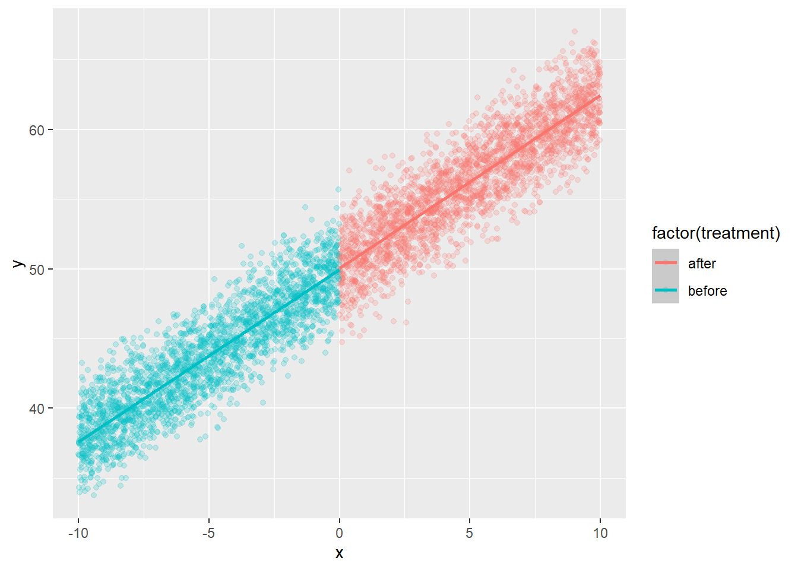
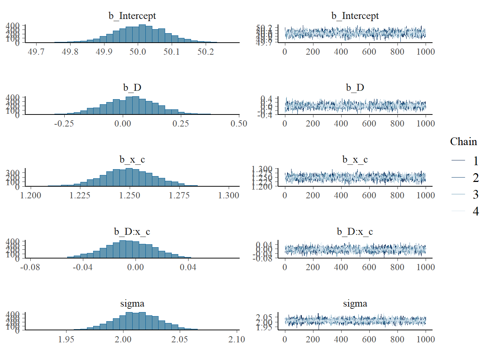
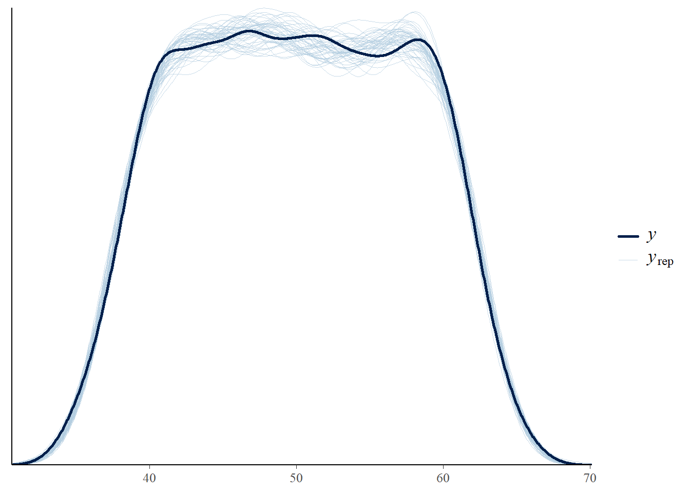
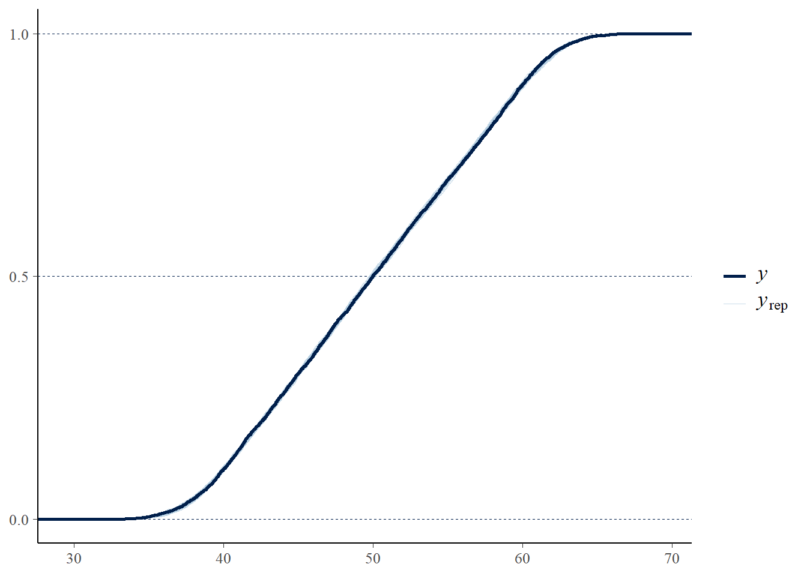
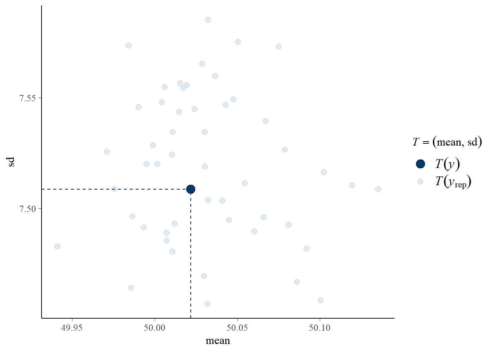

library(tidyverse)
library(brms)
library(marginaleffects)4 Regression continuity designs
5 Load libraries
6 Introduction: Regression discontinuity
Reviewing regression discontinuity from sources:
- https://www.bayes-pharma.org/wp-content/uploads/2019/06/Session-5.4-Sara-Geneletti.pdf
The key to RD is the threshold acts like a randomizing device or an instrumental variable. Units close to the threshold are assumed to satisfy conditional exchangeability.
Assumptions:
- Unconfoundedness
- indpendence of guidelines
- monotonicity
- Continuity
1-3 are instrumental variable assumptions
Sharp RD estimator:
\[ATE = E(Y|Z=1) - E(Y|Z=0) - E(T|Z)=0 = \Delta_\beta = \beta_{0a}-\beta_{0b}\] Estimand = sharp jump in regression function at the cutoff.
\[Y_i = \alpha + \tau D_i + \beta_1 (X_i - c) + \beta_2 D_i (X_i - c) + \epsilon_i\]
- \(\tau\) is the estimator - treatment effect of discontinuity
- \(D_i = 1(X_i \geq c)\)
7 Single group regression discontinuity
Simulate data under 2 scenarios and then fit bayesian regression models:
- No treatment effect
- Treatment effect
7.1 No treatment effect
#simulate data
n<-5000
x<-runif(n,-10,10)
treatment<-if_else(x<0,0,1)
treatment_fac<-if_else(x<0,"before","after")
cutoff<-0
beta0<-50 # intercept
beta1<-1.25 #slope at cutoff
tau<-0 #jump at cutoff
beta2<- 0 #slope change above cutoff
y<-beta0+beta1*(x-cutoff)+tau*treatment+beta2*treatment*(x-cutoff)+rnorm(n=n,mean=0,sd=2)
dat<-tibble(x=x,y=y,treatment=treatment_fac)|>
mutate(x_c=x-cutoff,D=if_else(x>=cutoff,1,0))
ggplot(dat,aes(x=x,y=y,colour=factor(treatment)))+geom_point(alpha=.2)+stat_smooth(method="lm")`geom_smooth()` using formula = 'y ~ x'
#let's fit a model now to see if we recover the estimate
#set up prior = N(0,5) for fixed effects
# set up intercept prior as N(0,30)
priorset<-c(prior(normal(0,30),class="Intercept"),
prior(normal(0,10),class=b))
#fit model
#mod1<-brm(y~D + x_c + D:x_c,prior = priorset,data=dat,family = gaussian())
#saveRDS(mod1,"24_regression_discont_brms_model_withNOtreatmenteffect.rds")
mod1<-readRDS("24_regression_discont_brms_model_withNOtreatmenteffect.rds")
prior_summary(mod1) # checking priors in the model prior class coef group resp dpar nlpar lb ub tag
normal(0, 10) b
normal(0, 10) b D
normal(0, 10) b D:x_c
normal(0, 10) b x_c
normal(0, 30) Intercept
student_t(3, 0, 9.4) sigma 0
source
user
(vectorized)
(vectorized)
(vectorized)
user
defaultsummary(mod1) # getting results or model output, examine effective sample size and rhat Family: gaussian
Links: mu = identity; sigma = identity
Formula: y ~ D + x_c + D:x_c
Data: dat (Number of observations: 5000)
Draws: 4 chains, each with iter = 2000; warmup = 1000; thin = 1;
total post-warmup draws = 4000
Regression Coefficients:
Estimate Est.Error l-95% CI u-95% CI Rhat Bulk_ESS Tail_ESS
Intercept 50.01 0.08 49.85 50.16 1.00 2588 2694
D 0.03 0.11 -0.19 0.25 1.00 2813 2809
x_c 1.25 0.01 1.22 1.28 1.00 2455 2417
D:x_c -0.01 0.02 -0.04 0.03 1.00 3230 2834
Further Distributional Parameters:
Estimate Est.Error l-95% CI u-95% CI Rhat Bulk_ESS Tail_ESS
sigma 2.01 0.02 1.97 2.05 1.00 4313 2382
Draws were sampled using sampling(NUTS). For each parameter, Bulk_ESS
and Tail_ESS are effective sample size measures, and Rhat is the potential
scale reduction factor on split chains (at convergence, Rhat = 1).#check chains
plot(mod1) # chains well mixed
pp_check(mod1, type = "dens_overlay",ndraws=50)
#pp_check(mod1, type = "scatter",ndraws=50)# good for RD
#pp_check(mod1, type = "intervals",ndraws=50) # expected y vs observed y
pp_check(mod1, type = "ecdf_overlay",ndraws=50)
pp_check(mod1, type = "stat_2d",ndraws=50) # good for RD with x vs yNote: in most cases the default test statistic 'mean' is too weak to detect anything of interest.
7.2 With a treatment effect
tau2<-2.5 #jump at cutoff
y2<-beta0+beta1*(x-cutoff)+tau2*treatment+beta2*treatment*(x-cutoff)+rnorm(n=n,mean=0,sd=2)
dat2<-tibble(x=x,y=y2,treatment=treatment_fac)|>
mutate(x_c=x-cutoff,D=if_else(x>=cutoff,1,0))
ggplot(dat2,aes(x=x,y=y,colour=factor(treatment)))+geom_point(alpha=.2)+stat_smooth(method="lm")`geom_smooth()` using formula = 'y ~ x'
# fit model ; use same priors
#mod2<-brm(y~D + x_c + D:x_c,prior = priorset,data=dat2,family = gaussian())
#write_rds(mod2,file="24_regression_discont_brms_model_withtreatmenteffect.rds")
mod2<-readRDS("24_regression_discont_brms_model_withtreatmenteffect.rds")
#prior_summary(mod2) # checking priors in the model
summary(mod2) # getting results or model output, examine effective sample size and rhat Family: gaussian
Links: mu = identity; sigma = identity
Formula: y ~ D + x_c + D:x_c
Data: dat2 (Number of observations: 5000)
Draws: 4 chains, each with iter = 2000; warmup = 1000; thin = 1;
total post-warmup draws = 4000
Regression Coefficients:
Estimate Est.Error l-95% CI u-95% CI Rhat Bulk_ESS Tail_ESS
Intercept 50.04 0.08 49.88 50.19 1.00 2537 2451
D 2.51 0.11 2.29 2.75 1.00 3028 2581
x_c 1.26 0.01 1.23 1.28 1.00 2459 2490
D:x_c -0.01 0.02 -0.04 0.03 1.00 3034 2604
Further Distributional Parameters:
Estimate Est.Error l-95% CI u-95% CI Rhat Bulk_ESS Tail_ESS
sigma 2.00 0.02 1.96 2.04 1.00 4528 2633
Draws were sampled using sampling(NUTS). For each parameter, Bulk_ESS
and Tail_ESS are effective sample size measures, and Rhat is the potential
scale reduction factor on split chains (at convergence, Rhat = 1).#the D parameter matches what we set above, 2.5
#plot with conditional effects
#plot(conditional_effects(mod2,"x_c",conditions=list(D=c(0,1))))
#not really what i want7.2.1 Different way to plot
#make new dataset
newdat <- expand.grid(
x_c = seq(min(dat$x_c), max(dat$x_c), length.out = 200),
D = c(0, 1)
)
#get estimates
newdat$y_hat <- fitted(mod2, newdata = newdat)[, "Estimate"]
ggplot() +
geom_point(data = dat2, aes(x = x_c, y = y, color = factor(D)), alpha = 0.4) +
geom_line(data = newdat, aes(x = x_c, y = y_hat, color = factor(D)), size = 1.2) +
scale_color_manual(values = c("blue", "red"), name = "D") +
theme_minimal() +
labs(x = "x (centered)", y = "y", title = "brms RD model fit")Warning: Using `size` aesthetic for lines was deprecated in ggplot2 3.4.0.
ℹ Please use `linewidth` instead.
8 Multiple group regression discontinuity
work in progress
9 Session info
sessionInfo()R version 4.5.0 (2025-04-11 ucrt)
Platform: x86_64-w64-mingw32/x64
Running under: Windows 11 x64 (build 26100)
Matrix products: default
LAPACK version 3.12.1
locale:
[1] LC_COLLATE=English_United States.utf8
[2] LC_CTYPE=English_United States.utf8
[3] LC_MONETARY=English_United States.utf8
[4] LC_NUMERIC=C
[5] LC_TIME=English_United States.utf8
time zone: America/New_York
tzcode source: internal
attached base packages:
[1] stats graphics grDevices utils datasets methods base
other attached packages:
[1] marginaleffects_0.25.1 brms_2.22.0 Rcpp_1.0.14
[4] lubridate_1.9.4 forcats_1.0.0 stringr_1.5.1
[7] dplyr_1.1.4 purrr_1.0.4 readr_2.1.5
[10] tidyr_1.3.1 tibble_3.2.1 ggplot2_3.5.2
[13] tidyverse_2.0.0
loaded via a namespace (and not attached):
[1] gtable_0.3.6 tensorA_0.36.2.1 QuickJSR_1.7.0
[4] xfun_0.52 htmlwidgets_1.6.4 inline_0.3.21
[7] lattice_0.22-6 tzdb_0.5.0 vctrs_0.6.5
[10] tools_4.5.0 generics_0.1.3 curl_6.2.2
[13] stats4_4.5.0 parallel_4.5.0 pkgconfig_2.0.3
[16] Matrix_1.7-3 data.table_1.17.0 checkmate_2.3.2
[19] distributional_0.5.0 RcppParallel_5.1.10 lifecycle_1.0.4
[22] compiler_4.5.0 farver_2.1.2 Brobdingnag_1.2-9
[25] munsell_0.5.1 codetools_0.2-20 htmltools_0.5.8.1
[28] bayesplot_1.12.0 yaml_2.3.10 pillar_1.10.2
[31] StanHeaders_2.32.10 bridgesampling_1.1-2 abind_1.4-8
[34] nlme_3.1-168 posterior_1.6.1 rstan_2.32.7
[37] tidyselect_1.2.1 digest_0.6.37 mvtnorm_1.3-3
[40] stringi_1.8.7 reshape2_1.4.4 labeling_0.4.3
[43] splines_4.5.0 fastmap_1.2.0 grid_4.5.0
[46] colorspace_2.1-1 cli_3.6.4 magrittr_2.0.3
[49] loo_2.8.0 pkgbuild_1.4.7 withr_3.0.2
[52] scales_1.3.0 backports_1.5.0 timechange_0.3.0
[55] rmarkdown_2.29 matrixStats_1.5.0 gridExtra_2.3
[58] hms_1.1.3 coda_0.19-4.1 evaluate_1.0.3
[61] knitr_1.50 V8_6.0.3 mgcv_1.9-1
[64] rstantools_2.4.0 rlang_1.1.6 glue_1.8.0
[67] jsonlite_2.0.0 plyr_1.8.9 R6_2.6.1